Graphic design for Sektgar
This is how I designed a social feature for the Netflix mobile app.
Ironhack UX/UI Bootcamp | 4th-week | work alone | 4 days
The Challenge
Starting that project I already had knowledge about UX research and strategies. This bootcamp week was focused on UI Design:
“Take a popular app and think about a feature to add. Pass the challenge to another student” — I ended up designing a social feature for Netflix this week. Nice!
I was working alone this time, so to hold myself accountable I made a roadmap of how I am going to proceed:
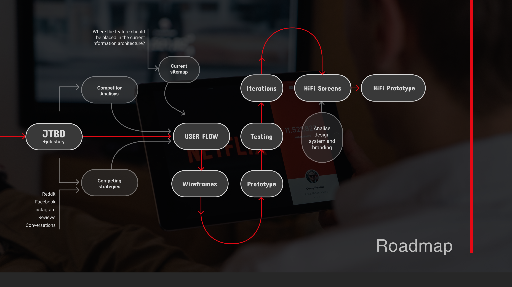
Jobs-To-Be-Done (JTBD)
The “Jobs-to-be-done” framework by Charles Revon is a method to help us define the users’ needs, so we can design in accordance with this definition.
Instead of merely defining the problem and trying to solve it, we analyze the exact “job” that our product/feature has “to get done” for the user.
In this case, Netflix is “hired” by the user to provide relevant, relaxing and entertaining content for a prolonged period. We can use the following sentence structure:
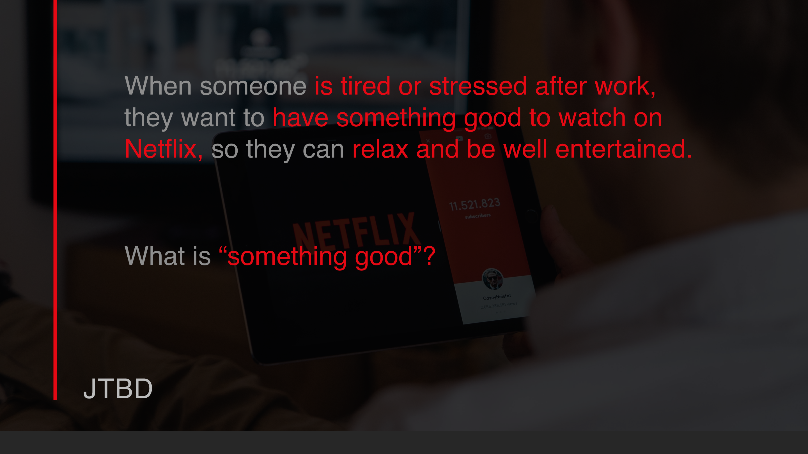
“Something good” is the key problem to solve here. How to find something good to watch? It is subjective…
Netflix has a fine algorithm to customize the recommended content according to users’ “taste”. It is based on the content added to ‘Your List’ and on the titles that have been already watched and rated (‘thumb up/down’ rating). There is plenty of categories and recommendations. Almost too many. And they do not always help since a big chunk of users is dissatisfied with the ease of finding the right content.
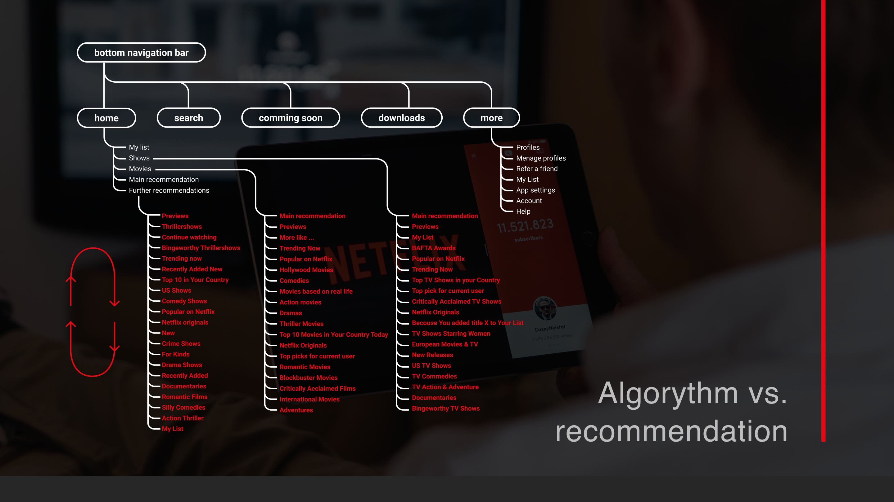
Survey
I conducted a survey to find out if the users would actually like any social features on Netflix. I got 48 responses. Here is a bunch of user-centered reasons for adding social features to Netflix:
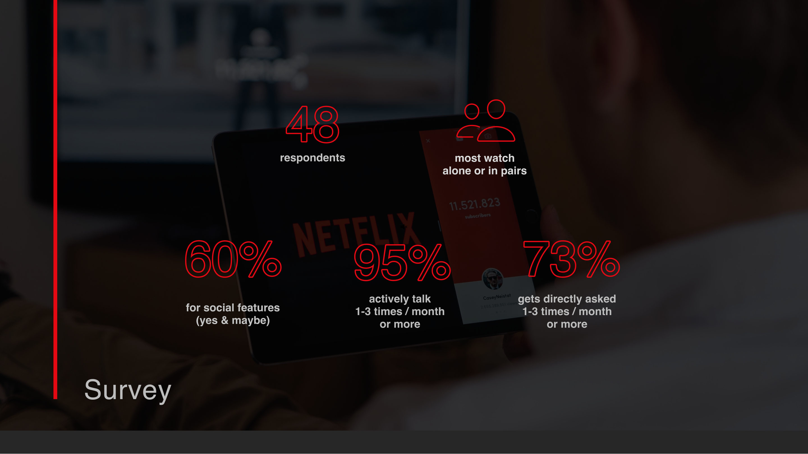
Survey results
- 👍60.4 % of all respondents answered ‘yes’ or ‘maybe’ when asked if they would like Netflix to add social features.
- 👍Predominantly respondents watch Netflix alone or with one other person, rarely in groups. This is a fact, that can make a ‘friend recommendation’ cue useful since the friends are not ‘at hand’ when watching.
- 👍95% — talks actively with friends (or family), about what they saw on Netflix 1–3 times a month or even more often. This is a lot of peer exchange about Netflix content! Maybe it would make sense to facilitate this exchange within the app?
- 👍73% — gets directly asked, what they watch on Netflix (by friends or family) 1–3 times a month or more often. Another good reason to add a ‘recommend to a friend’ feature!
Having said that, there is plenty of reasons why Netflix does not have a social network running. They do extensive user research and apparently, they have ‘better things to do’ — UX-wise and business-wise. In 2004, before they had the all-mighty Netflix algorithm, they had a social network, but they killed it in 2010 to concentrate resources on expansion and content creation. The only social feature that is left for now is the ‘paper plane’ icon for sharing to social media.
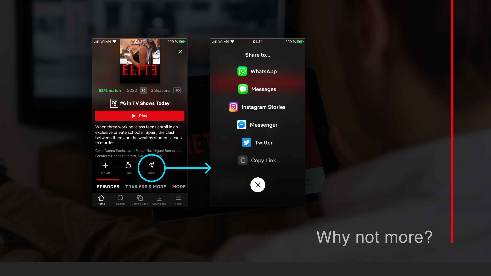
More then half of my respondents would not use this sharing feature. They also pointed out the following reasons why Netflix does not have more social features:
Bussiness reasons:
- 👎N. prioritized core features and focused on stability while expanding
- 👎N. focused on content creation instead of social network
- 👎there is not enough user demand for implementing such an expensive integration
User reasons:
- 👎Spoiler-reviews
- 👎It is not part of the ‘please shut brain down’ experience
- 👎other SM platforms are enough
- 👎Privacy concerns
“People often use Netflix for guilty pleasure. Binge-watching stupid sitcoms or romcom. Sharing activity means having to either self-censor or constantly remember about privacy. It would make Netflix less relaxation and more image building tool.” (anonymous survey respondent)
“It’s weird to see your friends binge-watching when they said they didn’t want to go out for drinks”(anonymous survey respondent)
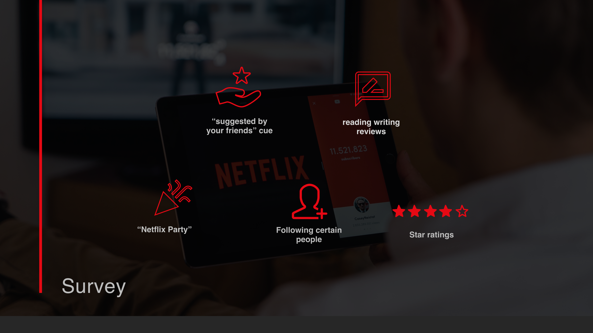
I the end of the survey, I directly asked people to choose from several options listed above the feature that they are most likely to use:
35 of 48 respondents said the “suggested by your friends” cue would be useful to them, making it the “most wanted” feature of my survey.
First Prototype (Midfi)
Feature placement
I decided to work on that feature and make a prototype showing how a user could recommend a title to a friend within the Netflix mobile app.
- ✔︎ “Recommend” icon placed next to other icons (the place is free!)
- ✔︎ The ‘Recommended by Friends’ cue will be placed among other recommendation cues and depends on the frequency of use (if user uses it a lot, then it moves up the rank)
- ✔︎ Information on the movie/TV show page: “who recommends this title to you” (“chips” with little avatars of users)

User flow
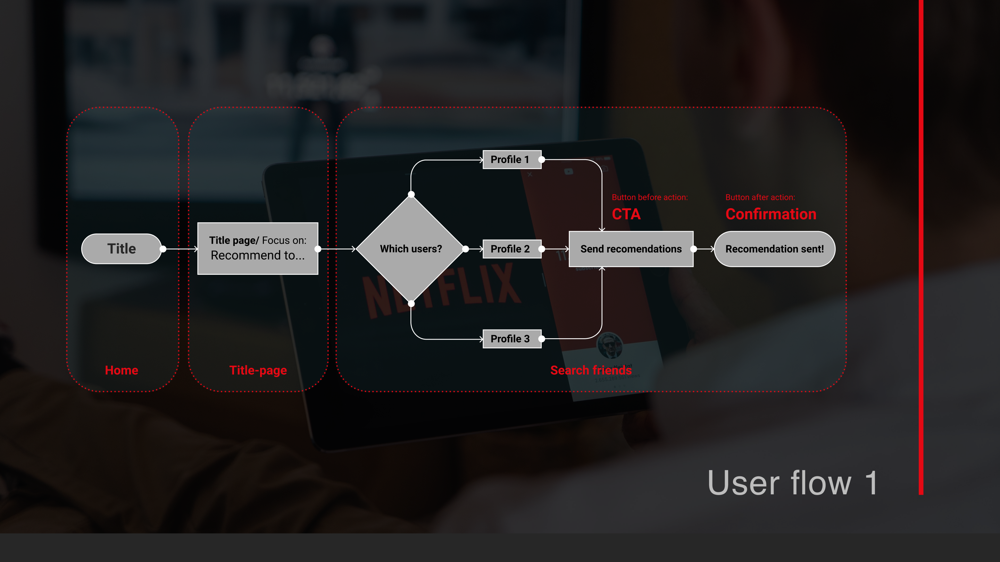
First prototype (MidFi)
Testing results worth considering in iteration (12 people)
- 🤦🏼♀️On home page; prototype problems: info button is too small, hotspot on homepage title can be on whole movie artwork;
- 🤦🏼♀️Page with friends profiles; user wants to search friends, confirm button has to appear only when the user selects friends and be pinned on scroll to the bottom;
- 🤦🏼♀️Page with friends profiles; the activity status of friends is irrelevant for this place;
- 🤦🏼♀️Flow end page; user needs a “done” button or wants to come back to the starting point (page with movie description).
Hifi Prototype
The testing gave me an idea, if the positioning of the feature makes sense. Wanting to include the searching feature, I changed the user flow and headed directly for the hifi prototype. This prototype shows how the user can find a certain person among their friends and send the recommendation to them.
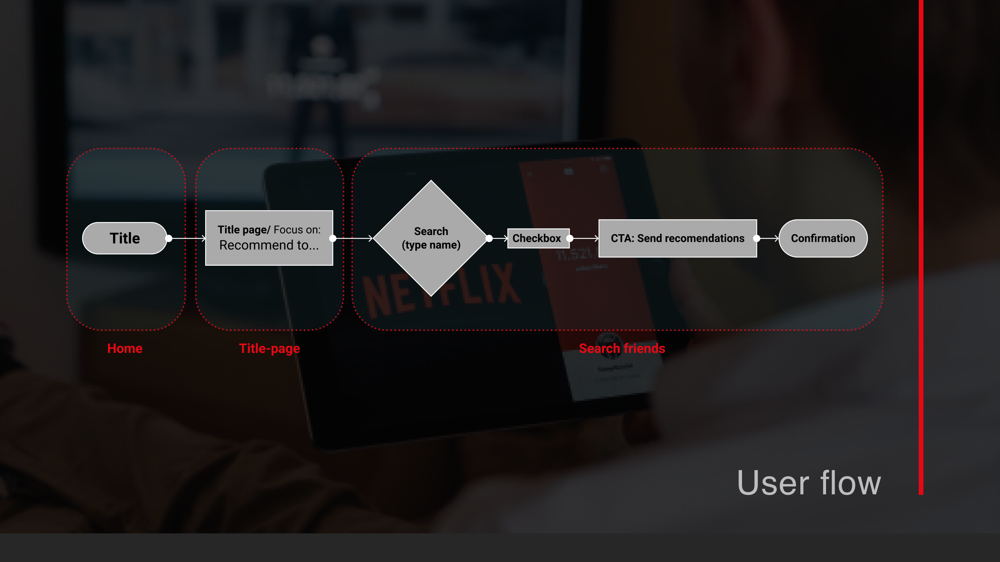
Further work after testing the Hifi Prototype
- 🛠 The user should be able to “mark all” results in the friends search (of course).
- 🛠 I would think about grouping the features: sharing and recommending under one icon because some users did not understand why it is apart.
- 🛠 I would redesign the “more” screen to add a social network platform: add the “search” section there, move “Menage profiles” to Settings, change “account” icon from single person to multiple to avoid confusion with user profile icon etc.
- 🛠 I would add settings with consideration to users privacy: detailed control over what content and activity is shared publicly and if the profile is visible or not.
- 🛠 This is how a flow for Searching & following other profiles (including profiles from the same account) could look like: other users can be just followed or befriended, profiles show “match rating” in %(like titles now) according to similarities in content preference.
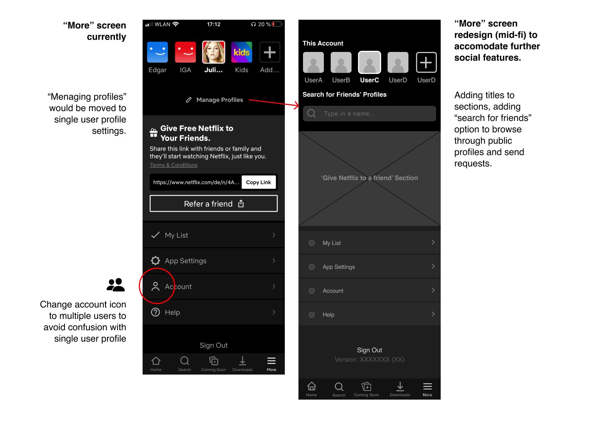
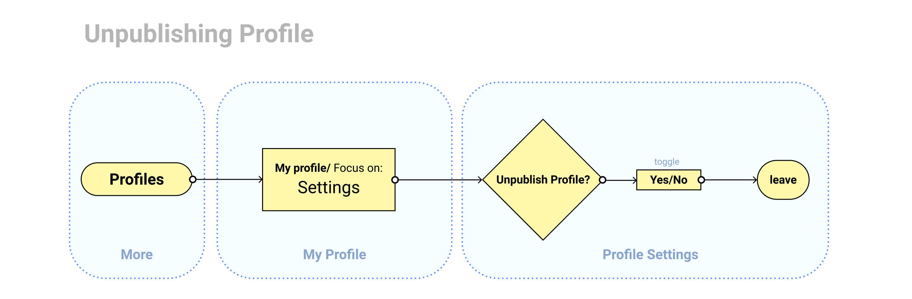
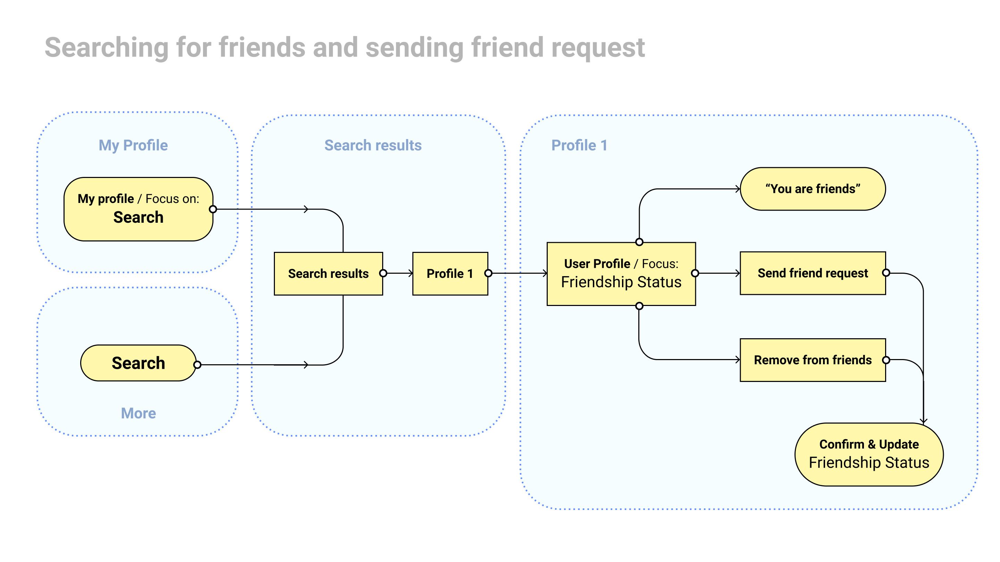
Summary
Are social features a competitive advantage for Netflix anyway?
Netflix belongs to Subscription-based Video on Demand Sevices (SVOD). The main competitors in this field currently are: Amazon, Hulu (USA) and YouTube Premium and Disney+.
From a market stand, social features would not be a significant competitive advantage. It might not be worth investing in it, knowing that Netflix has major expenses concerning development and content creation.
However, none of the competitors has social features, which could be another opportunity to excel and lead further.
Why did I not suggest a Facebook integration?
Netflix tried a Facebook integration back in 2013. In the U.S. the users Netflix activity could be shared with their Facebook friends. Also you could “unshare” a show while streaming. I did not want to suggest this kind of feature, because it apparently did not work for Netflix if they withdraw from it.
It is 2020. Social media went even more mad. A lot of my survey respondents were distrustful and hesitant about social features at all. Mostly because they did not want to publish their activity to random amount of people (ironically called ‘Friends’ on Facebook). If this kind of feature appeals on Netflix, it should be exclusive, not enabled by default and only to facilitate qualitative personal recommendations among close friends. This way Netflix would have the opportunity to create an alternative social network that respects it’s users data and doesn’t treat them like a commodity.